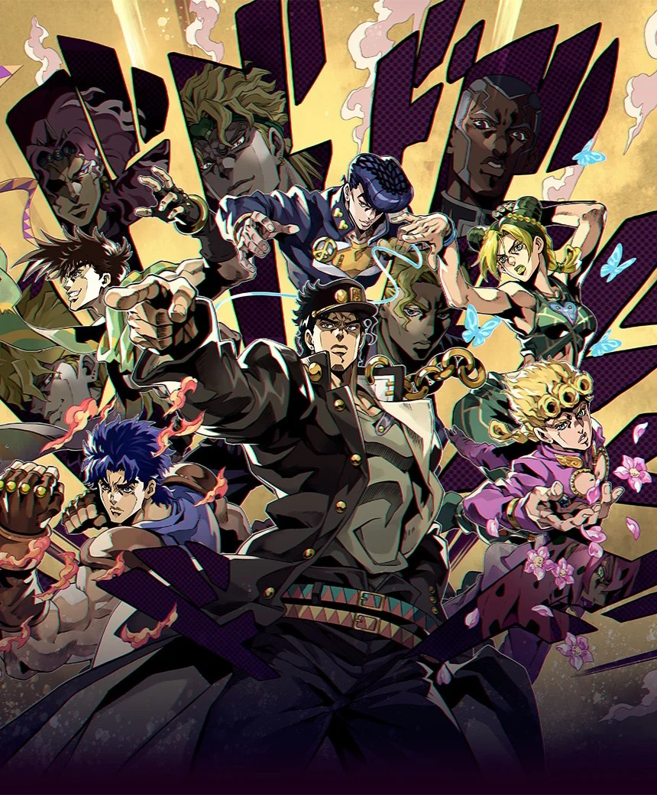
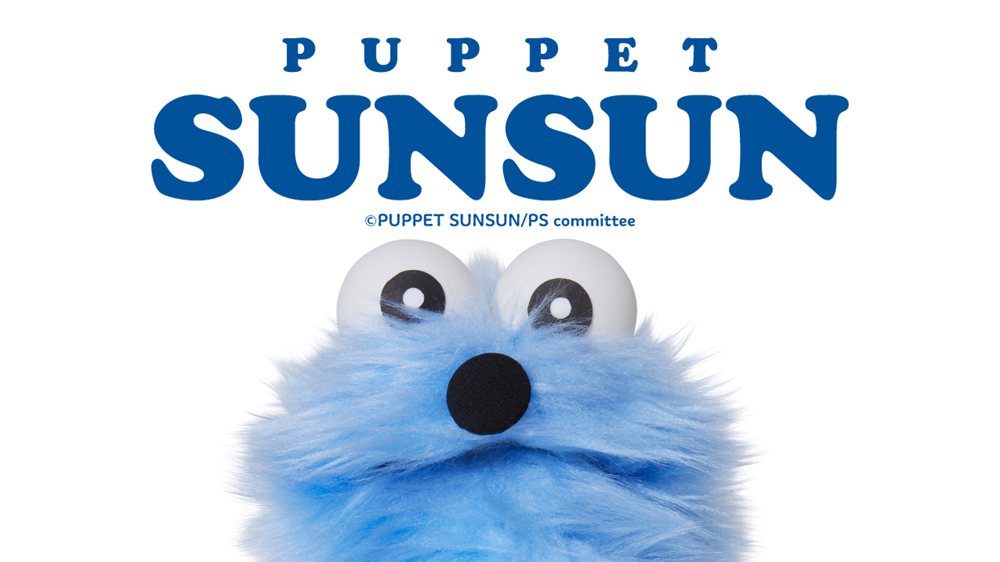
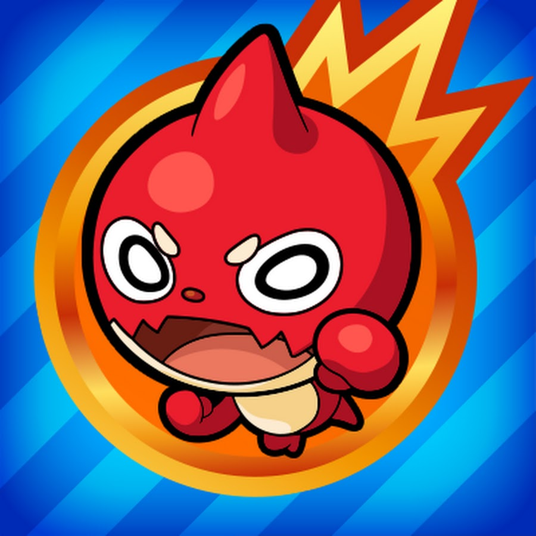
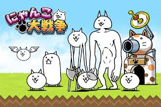
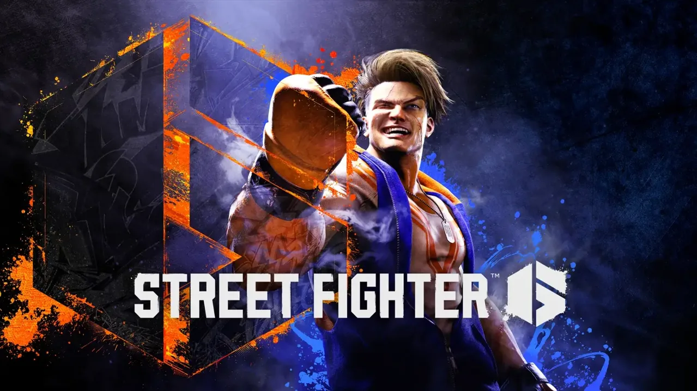
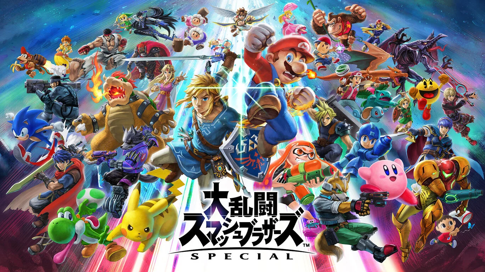
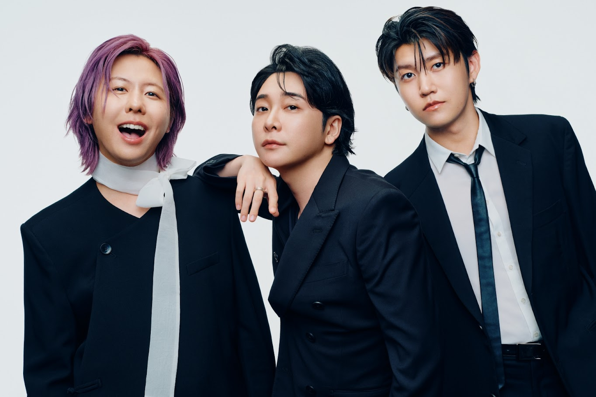
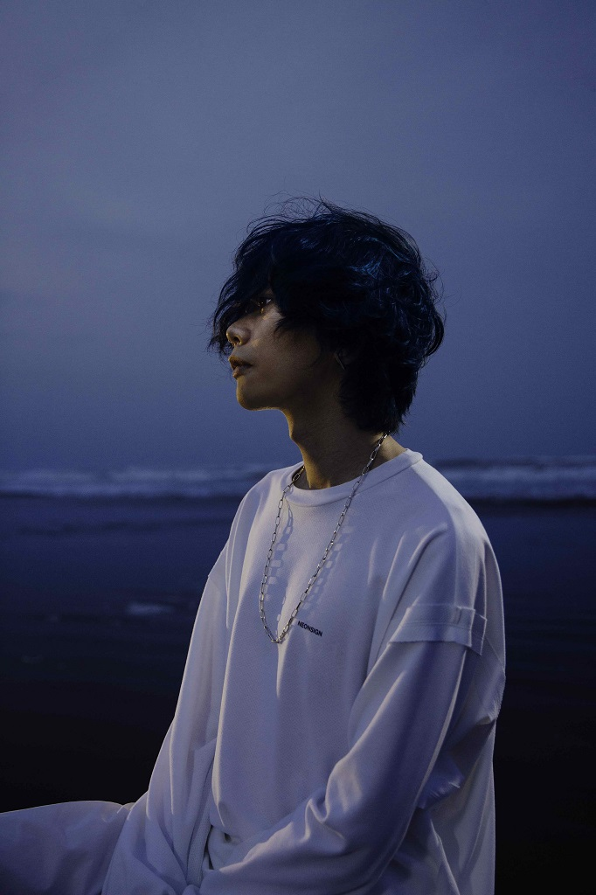
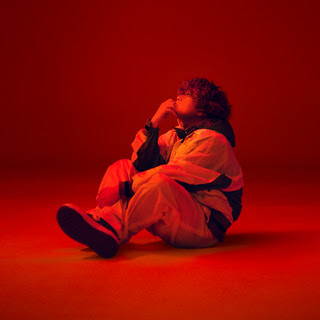

最近の趣味
最近の趣味を3つ紹介します。
アニメ鑑賞
アニメは、単体で見たり、ゲームの周回をしながら見たりしています。
最近見ているアニメ
・ジョジョの奇妙な冒険

「波紋」3部からは「スタンド」を駆使した、頭脳戦や能力バトル、歯ごたえのあるストーリーが魅力の作品です。
パペットスンスン

1分間のほのぼのアニメーション。天然なスンスンがかわいい作品です。
ゲーム
ゲームはいろんなジャンルをプレイしていますが、対戦ゲームを主にやっています
はまっているゲーム
モンスターストライク

隙間時間とかにアニメ見ながらよくやっています。
にゃんこ大戦争

モンスターストライクといっしょで、隙間時間とかにアニメ見ながらよくやっています。
ストリートファイター6

プレステでやってます。オンライン買ってないんでいつもトレーニングモードにこもってコンボ練習とかしかしていないです。
崩壊スターレイル
一応リリース初期からやってるんですが、何回かやめていて空白の期間があるんですけど、最近また初めてはまってます。
大乱闘スマッシュブラザーズ

コロナ過になってから初めて、6年間ぐらいやってます。
使用キャラは、クラウドとベレトをメインで使っています。
音楽鑑賞
朝の登校中や家で暇な時、寝る前によく聞いています。好きなアーティストと最近はまっている曲、3曲を紹介します。
好きなアーティスト
Mrs.GREEN APLLE

グッとくる歌詞や透き通るような高温が好きで聞いてます。
最近「Thry are」「coffer」「Attitude」をよく聞いています。
米津玄師

友達に紹介されて聞き始めてはまりました。低温ボイスでの独特な歌い方がかっこいい
最近は「RED OUT」「POP SONG」「春雷」をよく聞いています。
Vaundy

独特な歌声だけれども癖になる。気分を上げたいときとかによく聞いています
最近は「まぶた」「裸の勇者」「融解sink」をよく聞いています。